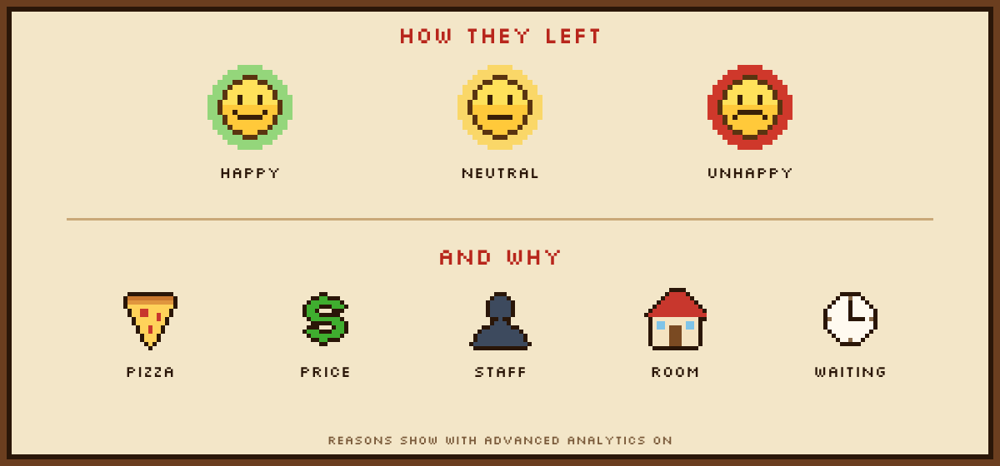

This update is about your customers' faces. You can now see, at a glance, how every customer feels when they leave your pizzeria, and why.

Every customer walking out now wears a small face over their head:
The end-of-day report counts the three, and the sales history has a new chart, How they left, by day, so you can see whether your changes made people happier.
Turn on Advanced analytics in Options and some customers also show why, with a small icon beside their face: the pizza itself, the price, the staff, the room, or a clock for those who got tired of waiting. Happy customers show what they liked most; unhappy ones what bothered them most.
There is a new Pause button while the day runs. The clock stops but you can still zoom and scroll around the room, to look at the queues and the faces calmly.
Your save carries over as always. Thanks for playing, and tell us what you'd like to see next!